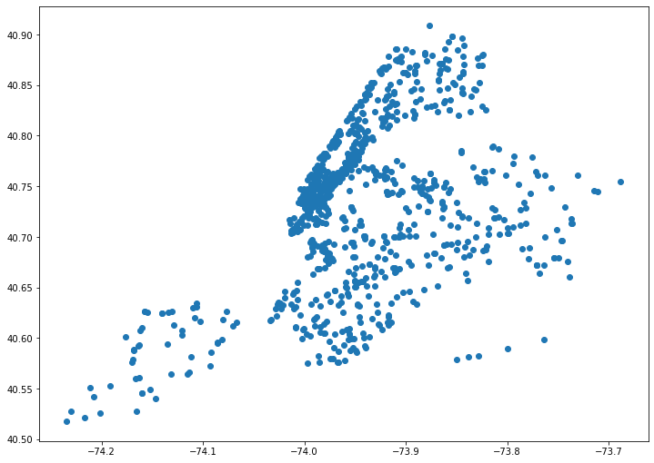
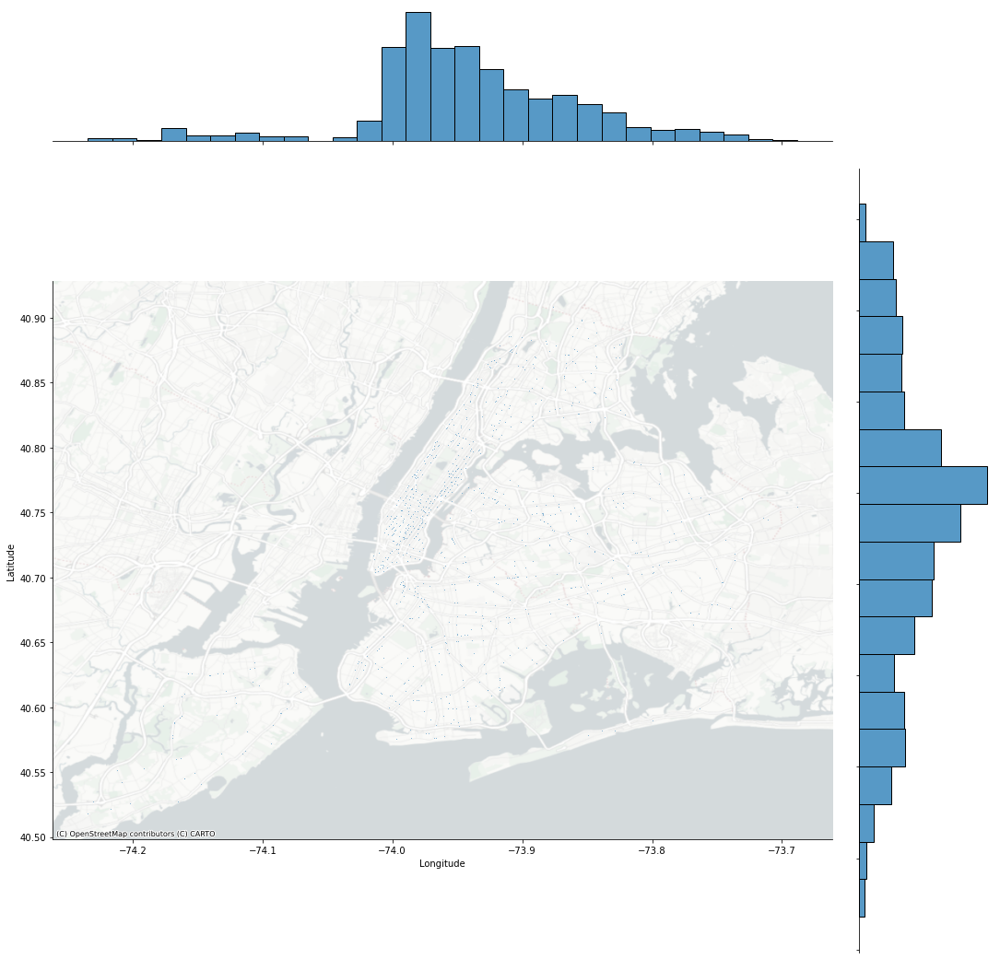
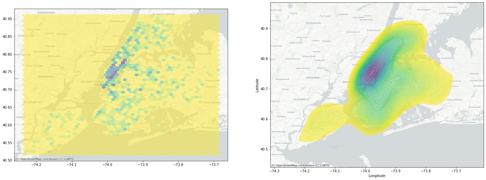
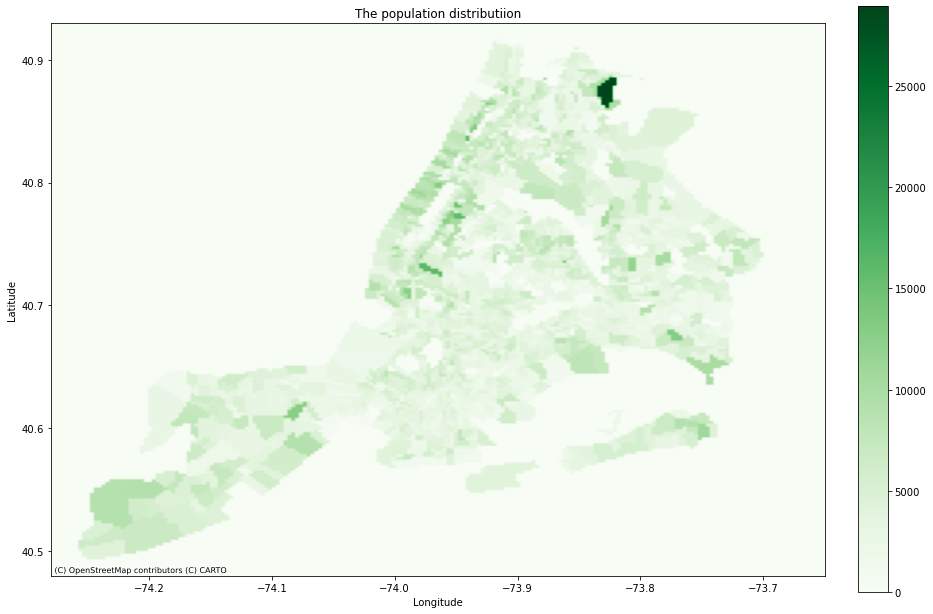
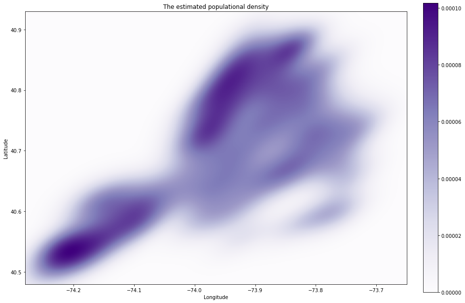
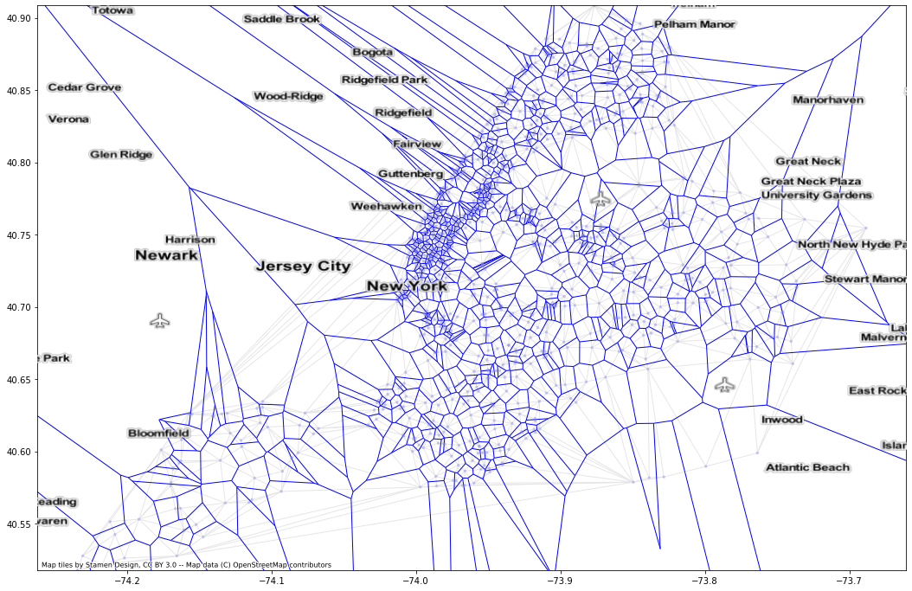

There are many service centers in our city, such as MTA subway station, Vaccination sites, Wifi hot-spots, Blue Bicycles, hospitals, parking lots etc.. Meanwhile, there are so many people in need of these services who are distributed maybe according to some point processes. The question of how to efficiently make assignments between the demands and the service centers gives rise to a special type of problems called semi-discrete optimal transport.
This post will explain Monge’s partition and how it can be achieved using some geospatial data.
Preliminary Setting
Let us denote the entire space as $\mathcal{X}$, (in a lot of cases this $\mathcal{X}$ is just some hull in a 2D plane.) The dirac-delta measure of service centers is $\nu = \sum_{i=1}^S \nu_s \delta_{x_s}$, where $x_s \in \mathcal{X} \ \ s = 1, \ldots, S$ are $S$ resource centers. The demand processes is a Poisson point process $\eta: \mathcal{X} \to \mathbf{N}$ ($\mathbf{N}$ is some $\sigma$-finite measure) with intensity measure $\lambda: \mathcal{X} \to \mathbb{R}_+$.
The public utility of assgining a demand point $x \in \mathcal{X}$ to service center $x_s$ is $u_s(\cdot): \mathcal{X} \to \mathbb{R}$. We assume this utility is $u_s(x) = C - |x - x_s|^2$, where $C$ is some constant.
The Matching Problem
First look at a natural possible solution where we partition the entire map so that each site is assigned some ‘‘governed area’’, the allocation takes a form of an open subpartition of $\mathcal{X}$.
Definition The set of such allocation rule is: $$ \mathcal{A} = \left\{ \mathbf{A} = (A_1, \ldots, A_S), A_s \text{ is an open subset of }\mathcal{X}, A_s \bigcap A_k = \emptyset \ \ \forall s \neq k \right\} $$ and the unallocated set is $A_0 : = \mathcal{X} - \bigcup_{s=1}^S A_s$.
Now let the regional social welfare be $u(\mathbf{A})$, (i.e., the sum of utility,) by Campbell’s formula $$ \begin{aligned} u(\mathbf{A}) = & \sum_{s=1}^S \mathbb{E}\left[ \int_{A_s} u_s(x) \eta(dx) \right] \ = &\sum_{s=1}^S \int_{A_s} u_s(x)\lambda(dx) \end{aligned} $$ The Problem
The incentive of a public planner is to maximize the regional social welfare, under the constraint such that every service center is fully loaded, (under the assumption that total demand is saturated.)
\begin{align} \max_{\mathbf{A}\in \mathcal{A}}&\quad u(\mathbf{A}) \ \text{s.t. }&\quad \nu_s \leq \lambda(A_s) \ \ \ s = 1,\ldots, S . \end{align}
A New York City Instance
Now construct the two densities needed for our problem.
You can sort of downloaded the data from NYC Open Data, which provides the locations of seasonal flu vaccinatiion sites. Let’s take a look at the locations by visualize it through $\texttt{seaborn}$.
import geopandas as gpd
import numpy as np
import pandas
import pysal
import seaborn
import contextily
import matplotlib.pyplot as plt
from sklearn.cluster import DBSCAN
#from sklearn.neighbors import KernelDensity
v_sites = pandas.read_csv(
'data/New_York_City_Locations_Providing_Seasonal_Flu_Vaccinations.csv')
g_sites = gpd.GeoDataFrame(v_sites, geometry=gpd.points_from_xy(v_sites.Longitude, v_sites.Latitude))
g_sites.head()

joint_axes = seaborn.jointplot(
x='Longitude', y='Latitude', data=v_sites, s=0.8, height=15
)
contextily.add_basemap(
joint_axes.ax_joint,
crs="EPSG:4326",
source=contextily.providers.CartoDB.PositronNoLabels
)

# For simplicity we assume that the capacity is index-irrelevant, assgining uniform mass to every site.
site_pos = np.vstack([v_sites.Longitude, v_sites.Latitude])
site_measure = {"pos": site_pos.T, "cap": (1/len(site_pos[0])) * np.ones(len(site_pos[0]))}
Kernel Density and Hexbin Plot as Two Types of Density Estimation
A hexbin plot is simply a hexagonal grid that counts how many points fall within each grid cell, so it is actually a spatial or $2$-dimensional histogram.
Kernel density estimator uses a non-parametric smooth kernel bump $\frac{1}{h}K(\frac{x - y}{h})$ such that $\int_{-\infty}^{\infty} \frac{1}{h}K(\frac{x - y}{h})dx = 1$ and $\int_{-\infty}^{\infty} \frac{x}{h}K(\frac{x - y}{h})dx = 0 $ to describe the grid bins. The approximated density in $2$-dimensional case is: $$ f(x, y) = \frac{1}{n} \sum_{i=1}^n \frac{1}{h_1 h_2} K(\frac{x - X_i}{h_1}) K(\frac{y - Y_i}{h_2}) $$ Often times we simply choose $K(\frac{x - y}{h})$ to be Gaussian kernel: $$ K(x, y) \propto \exp(- \frac{|x - y|^2}{2h^2}) $$
Obviously for the discrete measure we do not need this type of modeling, so it is just for illustration purpose. Later when we deal with diffusing measure we might need these density estimators.
f, ax = plt.subplots(1, 2, figsize=(25, 18))
ax[0].hexbin(
v_sites['Longitude'],
v_sites['Latitude'],
gridsize=50,
linewidths=0,
alpha=0.5,
cmap='viridis_r'
)
contextily.add_basemap(
ax[0], crs="EPSG:4326",
source=contextily.providers.CartoDB.Positron
)
ax[1] = seaborn.kdeplot(
v_sites['Longitude'],
v_sites['Latitude'],
n_levels=50,
shade=True,
alpha=0.55,
cmap='viridis_r'
)
contextily.add_basemap(
ax[1], crs="EPSG:4326",
source=contextily.providers.CartoDB.Positron
)

What about the real density?
Now we have obtained the point locations, and we assigned uniform point masses to each of them representing the ‘‘capacity’’, so we are done constructing the first discrete measure.
Now what we need is the populational density of demand. Unfortunately even the Poisson type of point data is unavailable, as it has to be the dataset of spatial-tagged disease cases. So, to get the demand density distribution, we approximate it from a NYC census data, downloaded from Kaggle Mapping New York City Census Data. There are two files we can consider. The first one being the census block, which contains the exact locations of the blocks being censored, the block codes, county and state names. The second one contains the census tracts, the county, borough names and exact populations calculated for each block.
Let’s first merge the two pandas data frames to obtain the point data, each point contains all the information carried by the census tract statistics.
blocks = pandas.read_csv('data/census_block_loc.csv')
census = pandas.read_csv('data/nyc_census_tracts.csv', index_col=0)
blocks = blocks[blocks.County.isin(
['Bronx', 'Kings', 'New York', 'Queens', 'Richmond'])]
blocks['Tract'] = blocks.BlockCode // 10000
blocks = blocks.merge(census, how='left',
right_index=True, left_on='Tract')
blocks.head()
Start From Populational Density
We choose the total population as a number that labels the specific points with their associated populational density, so still they form a discrete point measure. But it is at least helpful to visualize the populational density through some colormap.
latmin = 40.48
lonmin = -74.28
latmax = 40.93
lonmax = -73.65
lat_vals = np.mgrid[latmin:latmax:200j]
lon_vals = np.mgrid[lonmin:lonmax:200j]
mp_vals = np.zeros([200, 200])
d_lat = lat_vals[1] - lat_vals[0]
d_lon = lon_vals[1] - lon_vals[0]
for lat, lon, val in zip(blocks.Latitude, blocks.Longitude, blocks.TotalPop):
lat_idx = int(np.rint((lat - latmin) / d_lat))
lon_idx = int(np.rint((lon - lonmin) / d_lon))
if not np.isnan(val):
mp_vals[lon_idx, lat_idx] = val
lon_mts = np.min(lon_vals), np.max(lon_vals)
lat_mts = np.min(lat_vals), np.max(lat_vals)
fig, ax = plt.subplots(figsize=(15,15))
ax.set(xlim=lon_mts, ylim=lat_mts)
contextily.add_basemap(ax, crs="EPSG:4326", source=contextily.providers.CartoDB.Positron)
im = ax.imshow(mp_vals.T, origin='lower', cmap='Greens', extent=(np.min(lon_vals), np.max(lon_vals), np.min(lat_vals), np.max(lat_vals)))
ax.set_xlabel('Longitude')
ax.set_ylabel('Latitude')
ax.set_title('The population distributiion')
plt.colorbar(im, fraction=0.035, pad=0.04)
plt.show()

entire_pop = int(np.sum(blocks.TotalPop))
num_tracts = len(blocks.Longitude)
print("The entire population in NYC is {}, censored in {} tracts \n \
The city area is in the bounded box of longitudes [{} {}] and latitudes [{} {}]".
format(entire_pop, num_tracts, lon_mts[0],
lon_mts[1], lat_mts[0], lat_mts[1]))
The entire population in NYC is 52551009, censored in 18053 tracts
The city area is in the bounded box of longitudes [-74.28 -73.65] and latitudes [40.48 40.93]
Recall that the kernel density estimation is basically interpolating between the sampled points to predict the intensity of unsampled region, so the early view is that maybe we can also use the trick by fine-griding the entire 2D plane and apply the ‘‘scaled’’ version of density estimator, say $$ \hat{\lambda}(x, y) = \frac{1}{\sum_i pop_i h_x h_y} \sum_{i=1}^N pop_i K(\frac{x - x_i}{h_x}) K(\frac{y - y_i}{h_y}), $$ where $\hat{\lambda}(x, y)$ is the estimated density at longitude $y$ and latitude $x$, $pop_i$ is the censored total population at point $(x_i, y_i)$
To examine the correctness of this estimation, integrate the density over latitude and longitude $$ \begin{aligned} & \qquad \int_{- \infty}^{\infty} \int_{-\infty}^{\infty} \frac{1}{\sum_i pop_i h_x h_y} \sum_{i=1}^N pop_i K(\frac{x - x_i}{h_x}) K(\frac{y - y_i}{h_y}) dx dy \\ & = \frac{1}{\sum_i pop_i} \sum_{i=1}^N pop_i \int_{- \infty}^{\infty} \frac{1}{h_x} K(\frac{x - x_i}{h_x}) dx \int_{-\infty}^{\infty} \frac{1}{h_y} K(\frac{y - y_i}{h_y}) dy \\ & = \frac{1}{\sum_i pop_i} \sum_i pop_i = 1 \end{aligned} $$ Note that this demand estimation has some issues: first, it does not really make sense to integrate over an infinite 2-D plane, however for our application it’s sufficient as the tail will ‘‘fade’’ near the boundary; second, we have to consider the plausibility to use census data as a source of demand sampling. But since now I don’t have many choices :(, I will briefly use this for illustration purposes. If there are spatial-tagged discease data poping up, maybe then we can perform some more accurate geospatial analysis.
I am going to use the libary scipy Gaussian Kernel density estimation module to obtain the population density since it has the weighted implementation.
from scipy import stats
points = np.stack([np.array(blocks.Longitude), np.array(blocks.Latitude)])
pops = np.array(blocks.TotalPop)
pops[np.isnan(pops)] = 0
gkernel = stats.gaussian_kde(dataset=points, bw_method=None, weights=pops)
positions = np.stack([lat_vals.ravel(), lon_vals.ravel()])
Z = np.reshape(gkernel(positions).T, lon_vals.shape)
print('The kernel integration over the entire boundary is {}'.format(gkernel.integrate_box(low_bounds=[np.min(lon_vals), np.min(lat_vals)], high_bounds=[np.max(lon_vals), np.max(lat_vals)])))
The kernel integration over the entire boundary is 0.9917503652964066
Just to verify the estimated density is close to the data by plotting the heatmap of kernel integration. It turns out the 2-loop integration is quite slow, (about 20 mins). What we finally will get is a [200, 200] matrix representing the populational density on the map.
ker_vals = np.zeros((200, 200))
for lat_val in lat_vals:
for lon_val in lon_vals:
lat_idx = int(np.rint((lat_val - latmin) / d_lat))
lon_idx = int(np.rint((lon_val - lonmin) / d_lon))
#print("iter: lon {} lat {}".format(lat_idx, lon_idx))
ker_vals[lon_idx, lat_idx] = gkernel.integrate_box(low_bounds=[lon_val, lat_val], high_bounds=[lon_val+d_lon, lat_val+d_lat])
fig, ax = plt.subplots(figsize=(15,15))
ax.set(xlim=lon_mts, ylim=lat_mts)
#contextily.add_basemap(ax, crs="EPSG:4326", source=contextily.providers.CartoDB.Positron)
im = ax.imshow(ker_vals.T, origin='lower', cmap='Purples',
extent=(np.min(lon_vals), np.max(lon_vals), np.min(lat_vals), np.max(lat_vals)))
ax.set_xlabel('Longitude')
ax.set_ylabel('Latitude')
ax.set_title('The estimated populational density')
plt.colorbar(im, fraction=0.035, pad=0.04)
plt.show()

The Kantorovich Relaxation and Dual
It turns out the infinite dimensional problem can be solved by looking at its dual.
Recall what we previously did is representing the transference plan $\mathrm{T}_{\#}$ as $\mathbf{A}$, where $\mathrm{T}_{\#}(x) = \sum_{x_s} x_s \mathbb{I}_{{ x \in A_s}}$. What this transference plan means is that for every individual in location $x$, he or she is going to be sent site $x_s$ if $x$ is in the partition governed by $x_s$, i.e., $x \in A_s$. However, we can define a more general transference plan that allows the splitting of population in the location $x$.
Definition A weak relaxation is a set of non-negative measure over $\mathcal{X}$: $$ \boldsymbol{\lambda} := (\lambda_1, \lambda_2, \ldots, \lambda_S) \quad \sum_{i=1}^S \lambda_i \leq \lambda \quad \lambda_0 = \lambda - \sum_{i=1}^S \lambda_i $$
Consider a more general partition which assign each site a positive measure $\lambda_s$, such that $\int_{\mathcal{X}}\lambda_{s}=\nu_{s}$ and $\sum_{s \in \mathcal{S}} \lambda_{s} \leq \lambda $, in this form of assignment the demand of the entire area is divided by $\boldsymbol{\lambda}$ and assigned to corresponding sites.
The problem can be restated as finding a coupling $\pi \in \bar{\Pi}(\lambda, \nu)$ to maximize the total utility of assignment:
$$ \begin{aligned} U &:= \max_{\pi \in \bar{\Pi}(\lambda, \nu)} \int_{\mathcal{X} \times \mathcal{X}} u(x, y)\pi(dx, dy) \ &= \max_{\pi \in \bar{\Pi}(\lambda, \nu)} \int_{\mathcal{X}}\sum_{s \in \mathcal{X}_{\mathcal{S}}} u(x, s) \pi(dx, s), \end{aligned} $$
where $\bar{\Pi}(\lambda, \nu)$ is defined as: $$ \bar{\Pi} (\lambda, \nu) = \left\{\sum_{s \in \mathcal{S}} \delta_{x_{s}}(d y) \otimes \lambda_{s}(dx), \text { where } \int_{\mathcal{X}} \lambda_{s}=\nu_{s} \text{ and } \sum_{s \in \mathcal{S}} \lambda_{s} \leq \lambda .\right\} $$
This set of coupling can be thought of as a sum of naive independent couplings between site measure $\nu$ and splitted population measures $\lambda_s$, the splitted population measure sum up to at most $\lambda$.
In analogue to the Monge-Kantorovich theory, define the set of dual profit-price pairs:
$$
\overline{\mathcal{J}}_{u}:={(\xi, p) \in C(\mathcal{X}) \times \mathbb{R}^{|S|} ; \quad \xi(x)+p_s \geq u(x, x_s) \ \ \forall(x, x_s) \in \mathcal{X} \times \mathcal{X}_{\mathcal{S}} }.
$$
This dual variable set has an interesting interpretation. Imagine you are a broker who helps the government to make vaccination recomendation for the customers by pricing the sites. For each customer at location $x$, you help the customer get $\xi(x)$ as a vaccination welfare, and if the customer goes to site $x_s$, and the government gets paid with price $p_s$. So the total utility made with your help is $ \xi(x) + p_s$ for customer $x$ going to site $x_s$, it has to satisfy that your interposition actually gives no shrinkage of the social welfare, i.e., $\xi(x)+p_s \geq u(x, x_s) $.
The classical Kantorovich duality theorem says:
Theorem[Strong duality] If $\lambda(\mathcal{X}) = \nu(\mathcal{X})$, $$ U = \inf_{(\xi, p ) \in \overline{J}_u}\int_{\mathcal{X}}\xi d\lambda + \sum_{s \in \mathcal{S}} p_s \nu_s. $$
The Dual Program
Now we define a transformation that is related to the optimal pricing.
Definition [$u$-transform] For profit function $\xi \in \mathcal{C}(\mathcal{X})$, its $u$-transform is $$ \xi^u_s = \sup_{x \in \mathcal{X}} u(x, x_s) - \xi(x) $$ for price vector $p \in \R^S$, its $u$-transform is $$ p^u(x) = \sup_{s \in \mathcal{S}}u(x, x_s) - p_s $$
Definition [$u$-convexity] $\xi$ is $u$-convex if it satisfies that $\xi = p^u$ for some $p \in \mathbb{R}^S$, similarly, $p$ is $u$-convex if it satisfies that $p = \xi^u$ for some $\xi \in C(\mathcal{X})$. Denote the set of $u$-convex functions as $\mathcal{U}_{\xi}$ and $\mathcal{U}_p$.
One important property is that $\xi$ is $u$-convex if.f $\xi^{uu} = \xi$, and the same holds for $p$. By this property it can be shown that $\mathbb{R}^S \subset \mathcal{U}_p $ ($\forall p \in \mathbb{R}^S$, $p^{uu} = p$), thus $\mathcal{U}_p = \mathbb{R}^S$. Without such simplification, the significance is that by villani optimal transport, when the source and target measure is balanced one can narrow the searching scope in the set of $u$-convex functions $\mathcal{U}_{\ xi }$ or $\mathcal{U}_{p}$.
Strong Duality Restate
Theorem[Strong duality (unbalanced)] The primal problem can be reduced to its dual form: if $\lambda(\mathcal{X}) > \nu(\mathcal{X})$, then $$ U = \inf_{ p \in \mathcal{U}_p; p \ge 0} \int_{\mathcal{X}} [p^u]_{+} d \lambda + \sum_{i=1}^S p_i \nu_i, $$ where $[p^u]_+$ gives the optimal partition.
The advantage of such dual transform is that instead of directly looking for a infinite-dimensional partition, one optimize $p$ over finite dimensional space $\R^S_+$, computing $u$-transform of $p$ is equivalent to finding $p$-weighted partition, denoted as $\mathbf{A}^p = (A_1^p, \ldots, A^p_S)$, where $$ A^p_s = { x \in \mathcal{X} \ \ [u(x, x_s) - p_s]_+ \geq [u(x, x_j) - p_j]_+ \ \ \forall j \neq s} $$ Note that if $u(x,x_s)$ is the negative Euclidean distance plus a large constant, the partition coincides with $p$-weighted Voronoi diagram.
Solution to the Dual
Let the dual objective function be $\Phi(\cdot): \mathbb{R}^S \to \mathbb{R}$, $$ \Phi(p) = \int_{\mathcal{X}} \sup_{s\in \mathcal{S}}[u(x, x_s) - p_s]_+ d\lambda(x) + \sum_{s\in\mathcal{S}} p_s \nu_s $$
Lemma[Characterization of $\Phi$] $\Phi$ is convex and continuously differentiable with $$ \frac{ \partial \Phi (p) }{ \partial p_s } = \nu_s - \lambda A^p_s $$
Thus we can leverage gradient descent $ p \leftarrow p - \alpha_t \nabla_p \Phi$ to solve the problem. This gradient has a quite straightforward interpretation which is the demand-capacity differences. Intuitively if the demand is higher than the capacity then the price goes higher such that the assigned partition will be smaller, and vice versa.
Now we are at least ready to approach to the partition problem, with sites measure $\nu$, estimated density $\hat{\lambda}$, and shifted quadratic utility $u_s$. The first task is to calculate and plot $A_p$, it turns out that given a price $p$, the partition is just a set of adjacent polygons.
We can plot that under no whatsoever assumptions about the demand density, i.e., population uniformly distributed, what the Voronoi-diagram looks like. But we have to develop some machinaries to calculate and display the polygons induced by the diagrams. The code from (author: sunayana) provides an implementation to obtain the weighted voronoi cells.

I did not found particularly interesting things implementing the pricing algorithm but I blame my advisor for that, :)